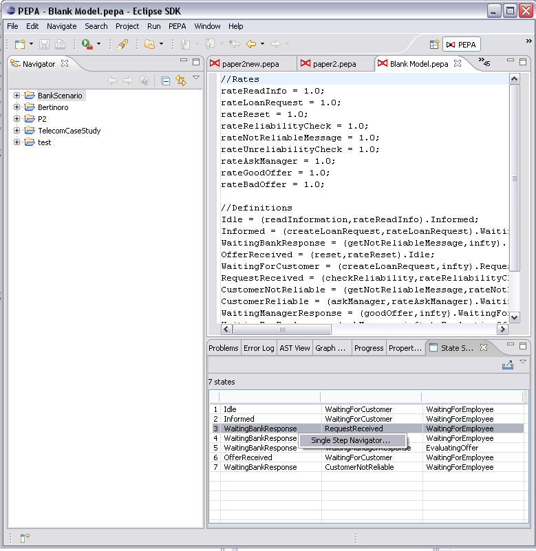
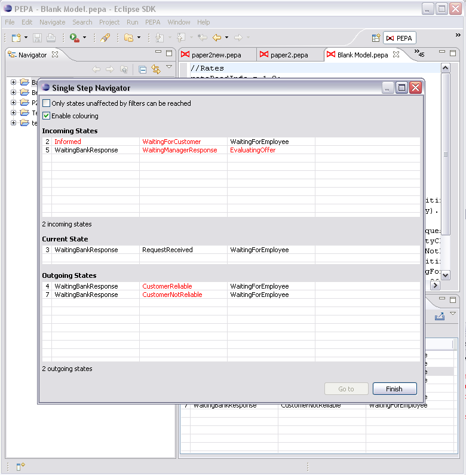

The Single Step Navigator is tool for walking the state space graphically. It is particularly useful for debugging purposes. It consists of two tables containing the list of incoming and outgoing states. The sequential components which cause the transition to be performed are highlighted and an option allows you to make filtered states not walkable.
To open the navigator, right click a state in the state space view and select Single Step Navigator. The tool will be shown in a separate dialog box.
 Double click a state to set the new current state in the navigator.